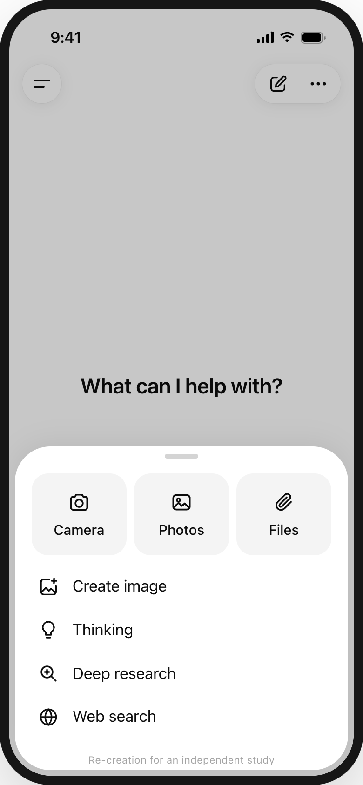
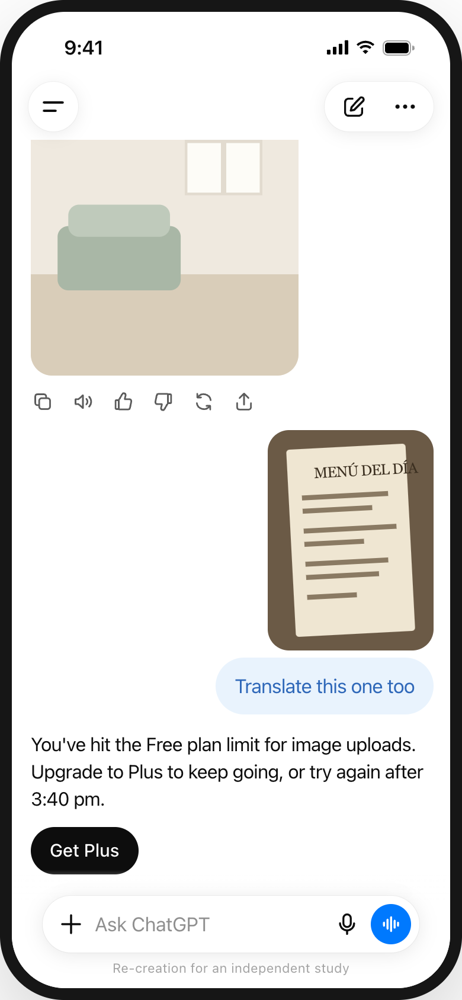
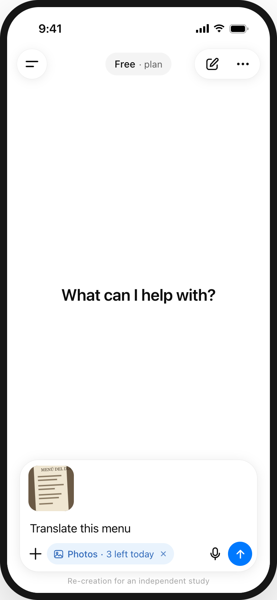
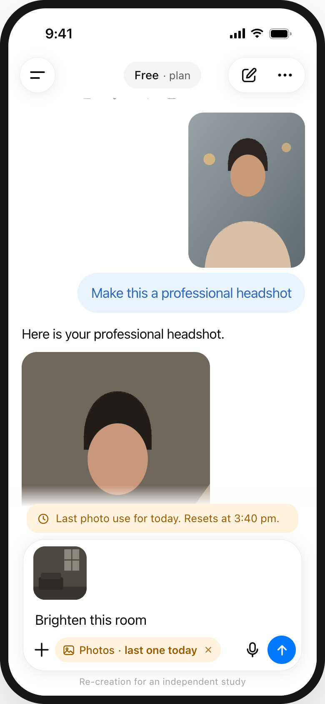
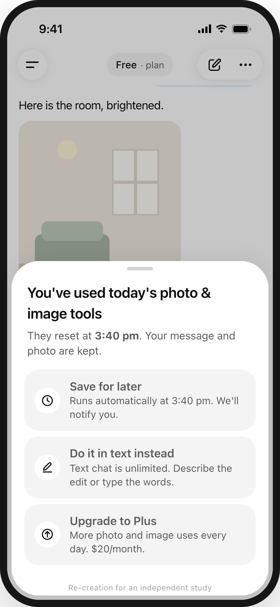
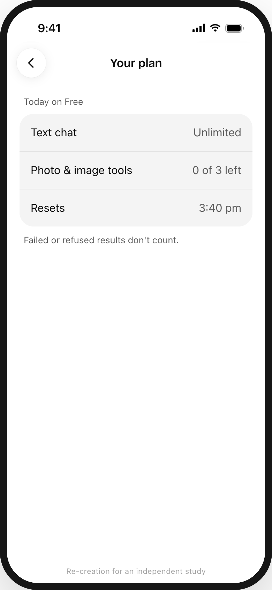

Free users find the photo and image tools. What makes them leave is a limit they couldn’t see, arriving in the middle of a task. In 147 negative App Store reviews, 54 were about usage limits and only 1 was about finding a feature.
Independent study by Mitul Vaghasiya, not affiliated with ChatGPT. Every screen below is my re-creation in ChatGPT’s visual style, based on its App Store screenshots (10 Oct 2026) and the public images listed in references/. They are not screenshots of the real app.
Re-created in the real app’s style. Where no public image of a state exists, it follows reviews and help pages, as noted in the case study.

1The tools sheet doesn’t say how many uses are left. Since Aug 2026 the count exists, but only in Settings › Usage.
Visibility of system status
2The limit appears only once the request is sent. The only way out is to upgrade, so the offer reads as a punishment.
Peak-end ruleThe same moment, in 4 screens.

1“Photos · 3 left today” appears where the decision is made, not hidden in settings.
Visibility of system status
2One line above the composer, no pop-up. The chip turns amber.
Error prevention
3Save it for later, do it in text, or upgrade. The message and photo are kept, so nothing is lost.
User control and freedom
4Text is unlimited, tools show “0 of 3 left”, the reset time is clear, and failed results don’t count.
Trust and predictabilityDoes seeing the meter make people ration their use? If 3 of 5 testers hold back because they can see the count, the idea needs rethinking.